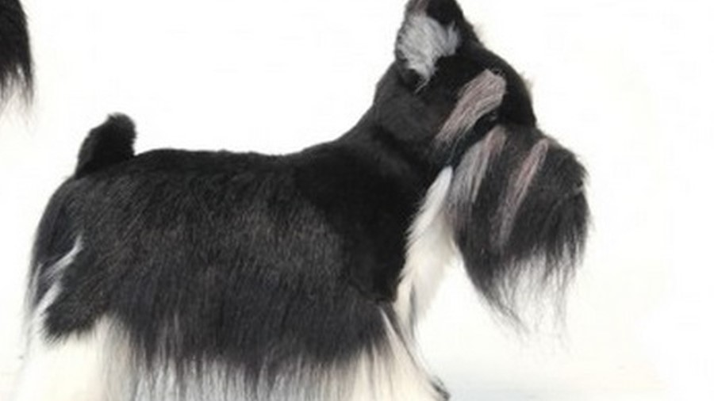
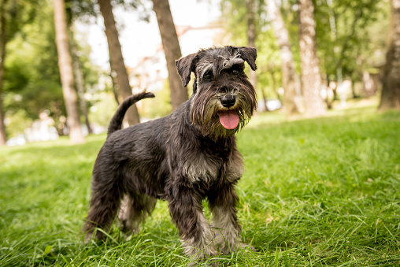
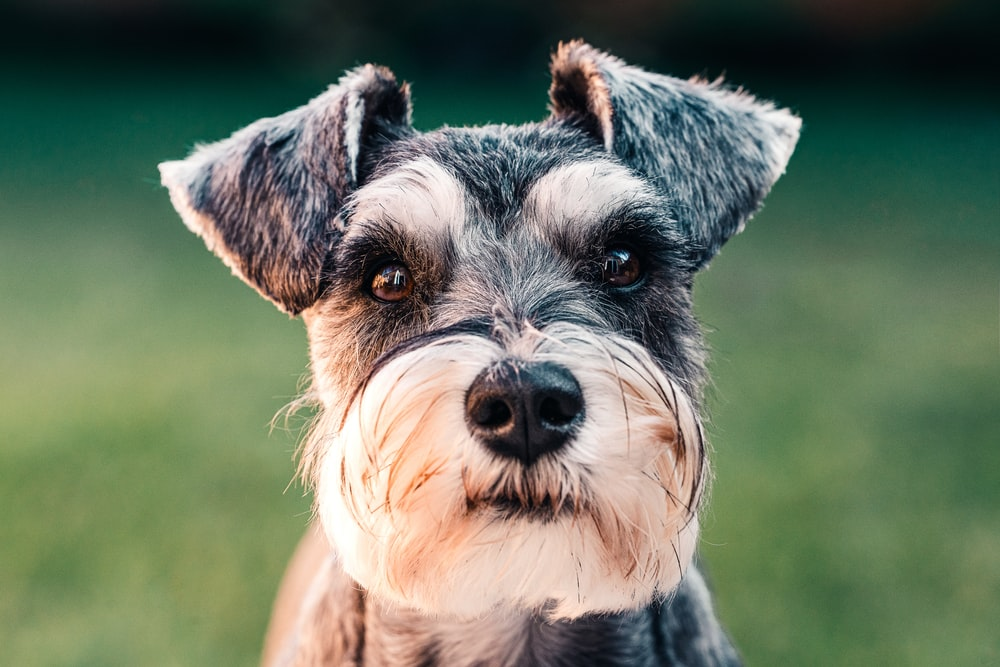
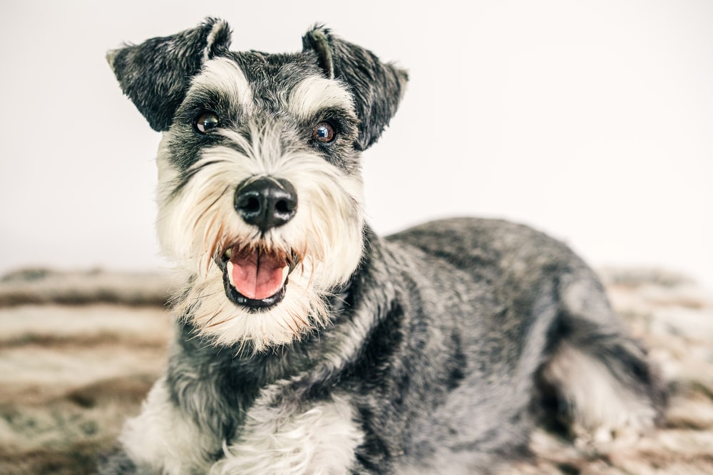

Miniature Schnauzer

origin
Germany
size
Small
color
Black
type
Purebred
breed group
Terrier (AKC:1926)(UKC)
character
Smartest
temperament
Alert
Fearless
Friendly
Spirited
height
14 inches (35.6 cm)
weight
11-18 pounds (5.0-8.2 kg)
geography
Europe
overview
The Miniature Schnauzer is a robust, sturdily built terrier of nearly square proportion. It was developed as a ratter and is quick and tough. Its gait displays good reach and drive. Its coat is double, with a close undercoat, and hard, wiry, outer coat which is longer on the legs, muzzle and eyebrows. Its facial furnishings add to its keen expression.
history
The Miniature Schnauzer is a German breed. During the years around the turn of the century, both smooth German Pinscher and coarse-haired Schnauzer pups appeared in the same litters. The German Pinscher Schnauzer Club initiated a policy requiring proof of three generations of pure coarse-haired Schnauzer coats for registration. This quickly helped set type and made them a distinct breed from the German Pinscher.
These Schnauzers were given the name Standard Schnauzer. Miniature Schnauzers were developed by crossing small Standard Schnauzers with the Affenpinscher and possibly the Poodle. The Schnauzer name derived from the German word Schnauze, which means muzzle. It was used as a ratter and still retains the ability, but is mostly a companion dog today. Some of the Schnauzer's talents include: hunting, tracking, ratter, watchdog, competitive obedience and performing tricks.
Photo Gallery


